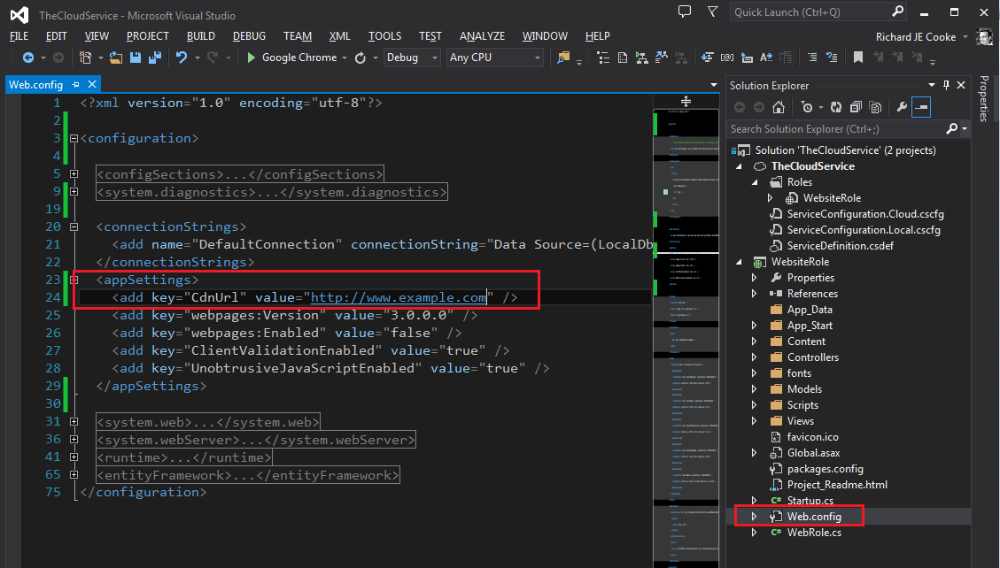
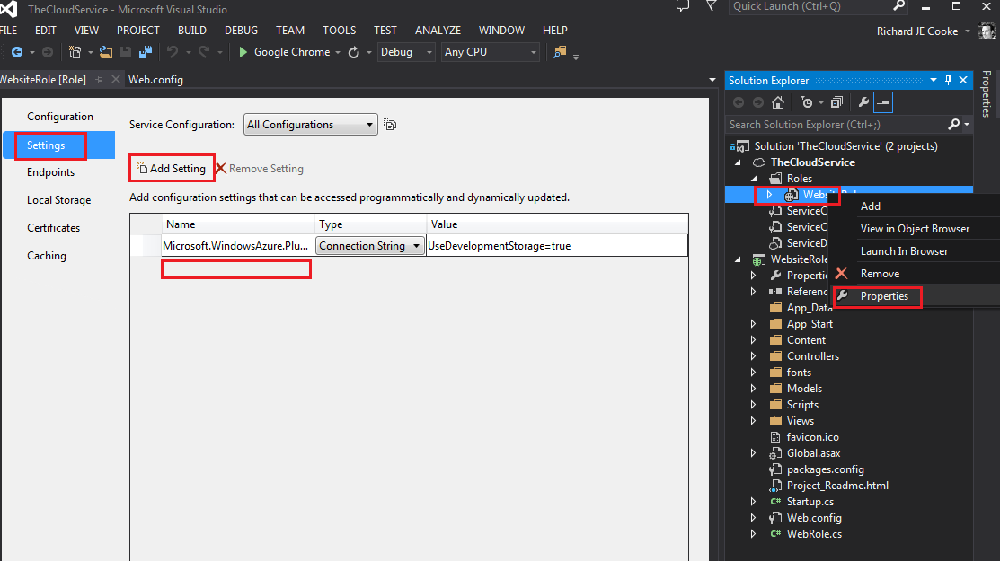
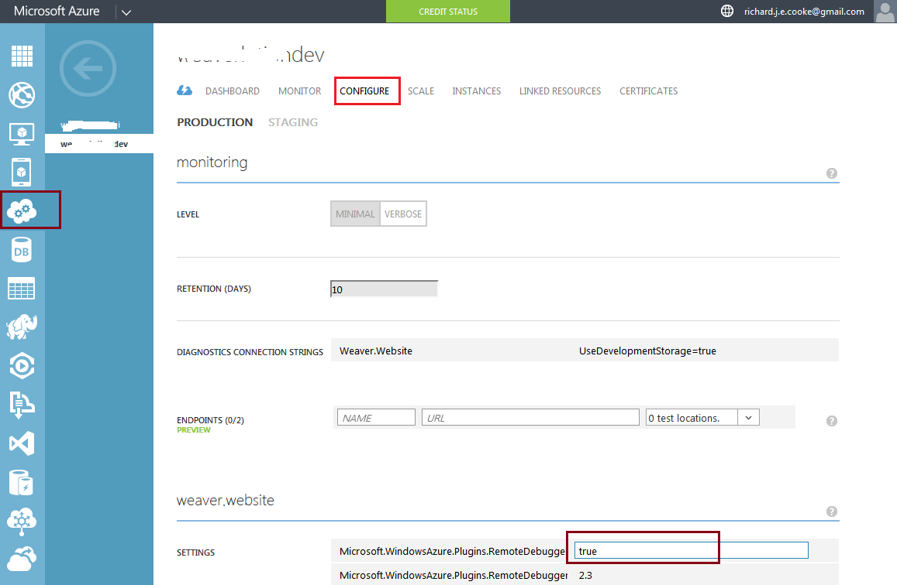

Settings in Azure applications should not be kept in the app.config nor web.config file. You also don't need to change the settings files for different environments when building (dev, qa, prod). Azure makes it much easier. Here's how it works.
In the image below I've made a brand new Azure cloud service with one web application included. I've added an app setting the old way that I'm used to. 
You can use the setting in your application like this:
var setting = ConfigurationManager.AppSettings["CdnUrl"];There are a few difficulties with this approach
Azure provides a new way of reading configurations setting, called CloudConfigurationManager. You use it like this:
var setting = CloudConfigurationManager.GetSetting("CdnUrl");
It will work just fine with the app settings in the image above. However it has two extra features:
These two features mean that you can put all your localhost \ development environment settings in the .cscfg file while programming. Then all you have to do is have someone with production permissions to log on to the Azure website and change the production settings that no one else may see. This keeps everything private and secure.
Open the website role's properties page in Visual Studio and add a new setting with the same name as the one in the web.config file (or just delete the web.config settings section entirely). 
Now in the Azure portal change the settings for each cloud service environment you deploy to. 
I used these settings to store my Entity Framework connection string. Instead of constructing a new
DbContext("connectionStringName")you now pass in the connection string itself after reading it from settings, like so
DbContext(CloudConfigurationManager.GetSetting("connectionStringName"))Entity Framework doesn't actually need the ProviderName attribute for construction so it works without error. To set log4net's connection string use this method:
public static void SetLog4NetAdoNetAppenderConnectionString(string connectionString)
{
var hierarchy = (Hierarchy) LogManager.GetRepository();
if (hierarchy == null)
return;
var appenders = hierarchy.GetAppenders().OfType<AdoNetAppender>();
foreach (var appender in appenders)
{
appender.ConnectionString = connectionString;
appender.ActivateOptions();
}
}The only problem with this system is that a deployment will overwrite the settings in the cloud with whatever is in the .cscfg file. You'll have to change them again in the portal by hand.